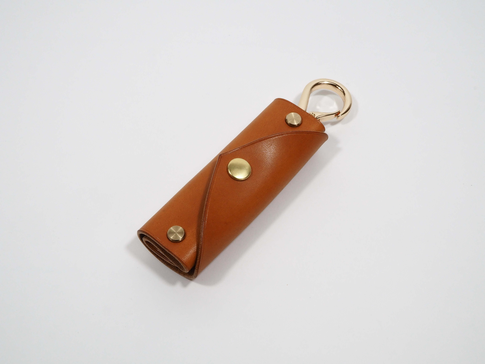
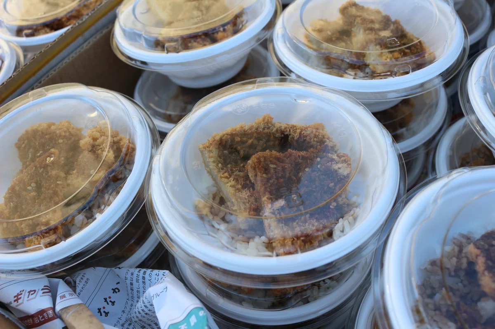
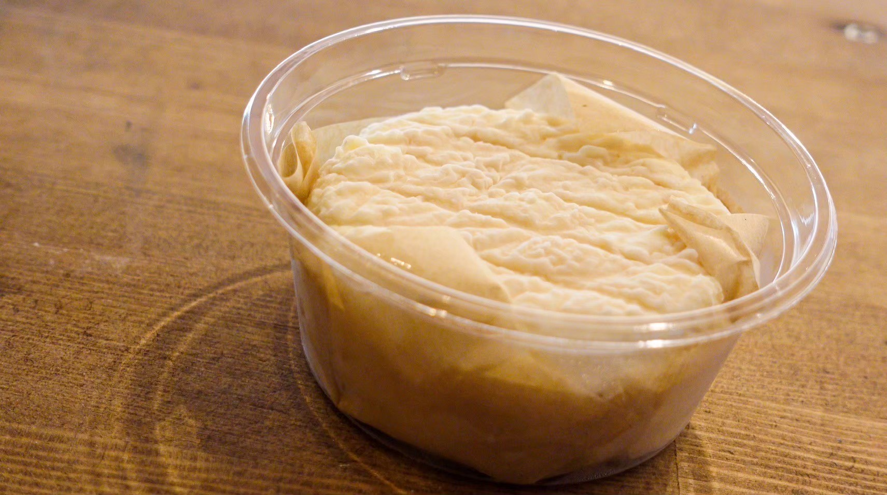
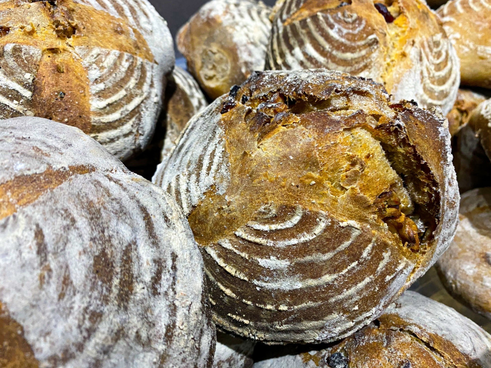
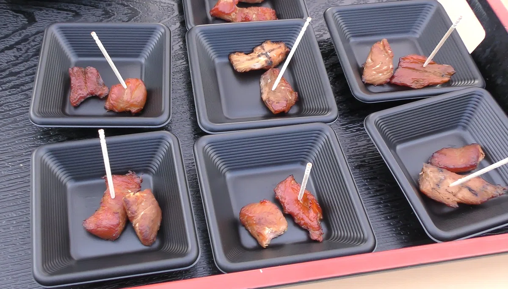
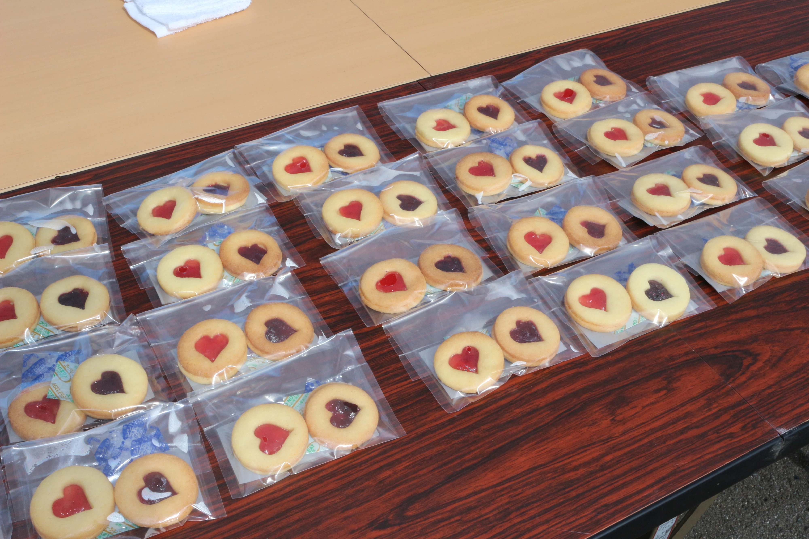
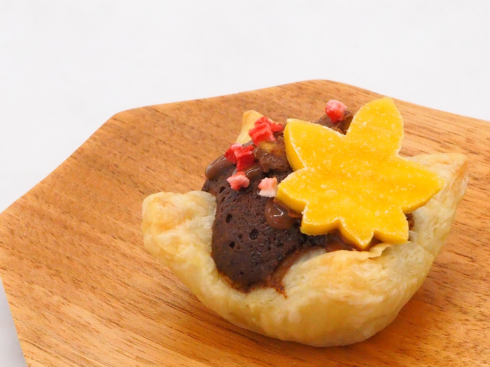
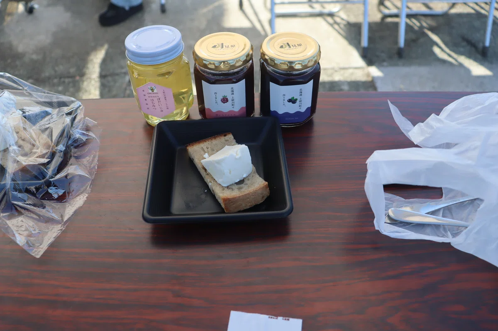

名物！地元グルメのエイドポイント
上砂川と周辺の「おいしい」をめぐる旅
提供コースの目印： F＝ファミリー S＝ショート L＝ロング

S
スタート地点
0.0km
0.0km
FSL

1
水源公園
2.35km
2.35km
SL

2
日本庭園＆キャンプ場
4.83km
4.83km
SL

🍁7月10日(金)
公開！
公開！
3
きまぐれ牧場
8.92km
8.92km
L

🍁7月10日(金)
公開！
公開！
4
鶉児童公園
13.03km
13.03km
L

🍁7月17日(金)
公開！
公開！
5
下鶉生活館
15.69km
15.69km
L

🍁7月17日(金)
公開！
公開！
6
まちの駅ふらっと
19.35km
19.35km
FSL
※F・Sはゴールで提供

🍁7月24日(金)
公開！
公開！
7
かみすながわ炭鉱館
20.41km
20.41km
FSL

🍁7月24日(金)
公開！
公開！
8
パークゴルフ場
22.57km
22.57km
FSL
🍖 昨年の提供例：ニジマス燻製・チーズ・エゾシカロースト など
地元の旬の味覚をご用意してお待ちしています！
地元の旬の味覚をご用意してお待ちしています！